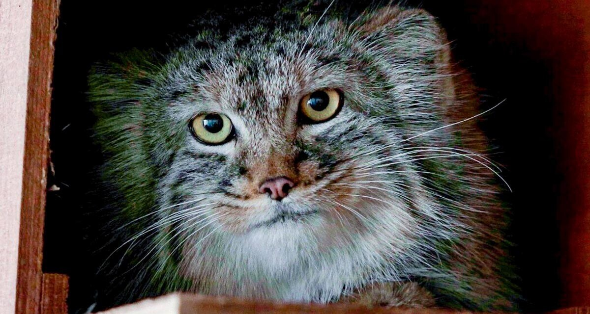
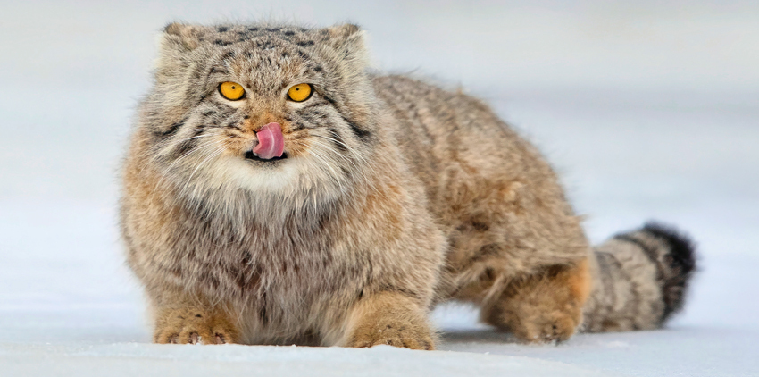

Mengapa Disebut Manul?
Kucing Pallas memiliki nama latin Otocolobus Manul yang membuat kucing ini juga disebut Manul.
Kucing Pallas mempunyai bulu sangat lebat, berkaki pendek, dan memiliki wajah berjanggut dengan ekspresi seperti Grumpy Cat
.
Kucing Pallas hidup dan berkembang biak sendiri di alam liar, Mereka biasa berburu di malam hari dengan memangsa tikus atau ayam hutan.
Kucing Pallas dapat di jumpai di beberapa negara seperti Cina, India, Mongolia, Pakistan, Tajikistan, Kazakhstan, Kirgistan, dan juga Rusia.
Pupil yang bentuknya bulat
Fakta Unik Tentang Manul Yang Pertama Adalah Bentuk Pupilnya yang Bulat
Tidak seperti jenis kucing lainnya yang memiliki pupil mata berbentuk vertikal, Kucing Pallas memiliki pupil mata berbentuk bulat.
Hal ini dikaitkan dengan cara berburu yang berbeda di mana kucing Pallas merupakan pemburu dan penyergap mangsanya.
Fungsi lain ekor manul

Fakta Unik Tentang Manul Yang Kedua Adalah Fungsi Lain Ekornya
Selain untuk membantu keseimbangan ketika berjalan pada permukaan yang tidak rata, Ekor Manul juga berfungsi sebagai penghangat kakinya ketika kedinginan.
Pelari yang Buruk
Fakta Unik Yang ketiga Adalah Manul Merupakan Pelari yang buruk
Kemampuan lari mereka yang sangat buruk itu sebagian besar disebabkan oleh bentuk tubuh mereka yang pendek, kokoh, dan juga berisi.